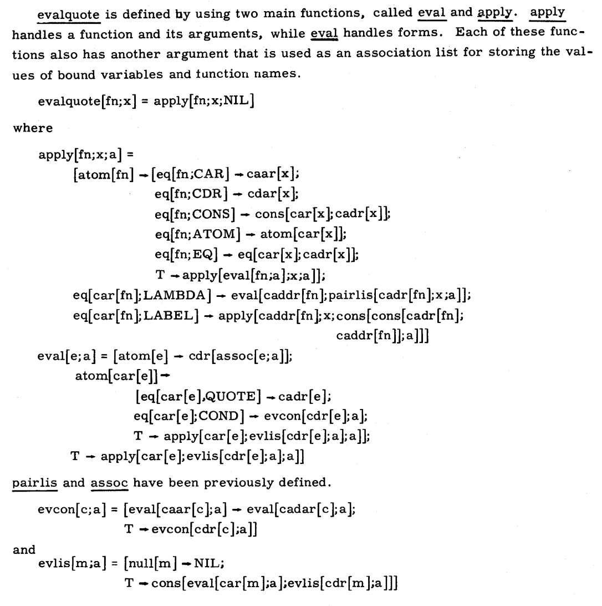

Putting it all together, we get the following interpreter:
(interp : (Exp Env -> Value))
(define (interp e nv)
(type-case Exp e
[(numE n) (numV n)]
[(varE s) (lookup s nv)]
[(plusE l r) (add (interp l nv) (interp r nv))]
[(lamE v b) (funV v b)]
[(appE f a) (let ([fv (interp f nv)]
[av (interp a nv)])
(type-case Value fv
[(funV v b)
(interp b (extend nv v av))]
[else (error 'app "didn't get a function")]))]
[(let1E var val body)
(let ([new-env (extend nv
var
(interp val nv))])
(interp body new-env))]))
Exercise: We wrote down a particular ordering above, which we put into practice in the code. But is that the same ordering that actual languages use? In particular, are non-function errors reported after or before evaluating the argument? Experiment and find out!
Since we’ve taken several steps to get here, it’s easy to lose sight of what we’ve just done. In just 20 lines of code (with a few helper functions), we have described the implementation of a full programming language. Not only that, a language that can express all computations. When Turing Award winner Alan Kay first saw the equivalent program, he says,
Yes, that was the big revelation to me when I was in graduate school—when I finally understood that the half page of code on the bottom of page 13 of the Lisp 1.5 manual was Lisp in itself. These were “Maxwell’s Equations of Software!” This is the whole world of programming in a few lines that I can put my hand over.
I realized that anytime I want to know what I’m doing, I can just write down the kernel of this thing in a half page and it’s not going to lose any power. In fact, it’s going to gain power by being able to reenter itself much more readily than most systems done the other way can possibly do.
We’ve just rediscovered this same beautiful, powerful idea! If you want to see the original, here’s that manual (by McCarthy, Abrahams, Edwards, Hart, Levin). Here it is, copied:

Alright, so we now have a working interpreter for a full-fledged language. But before we can feel sure of that, we should try a few more examples to confirm that we’re happy with what we have.